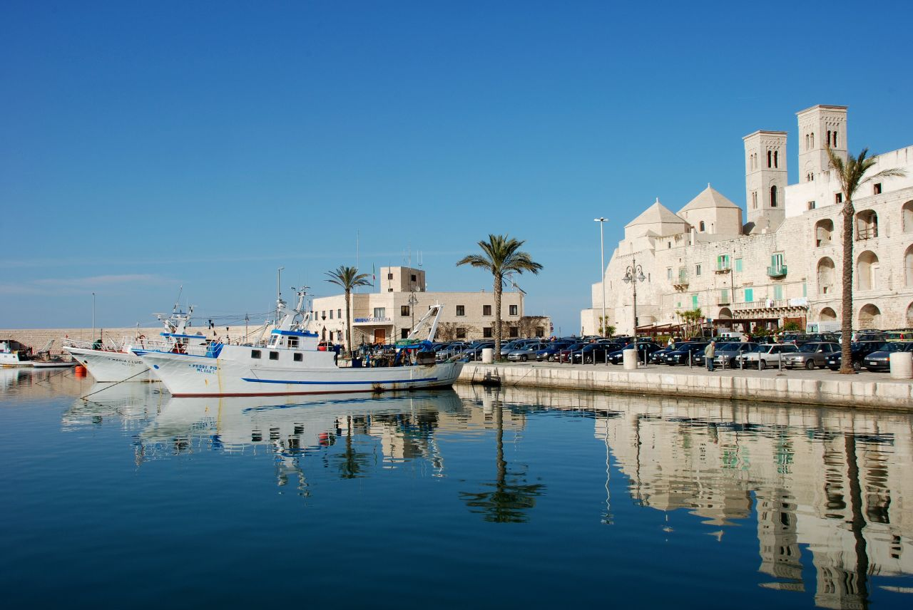
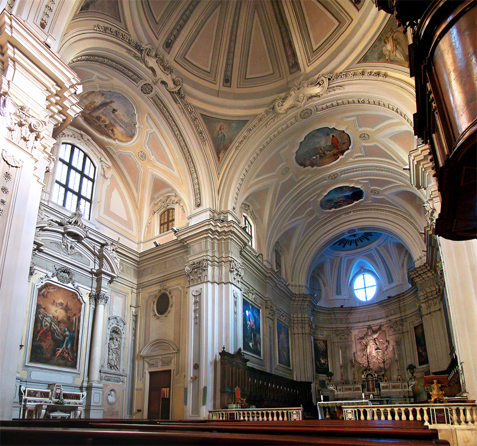
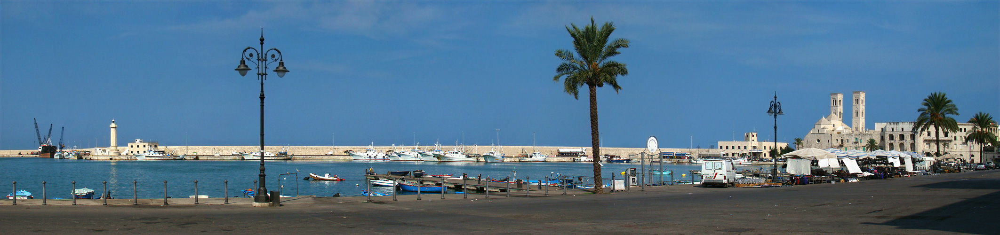
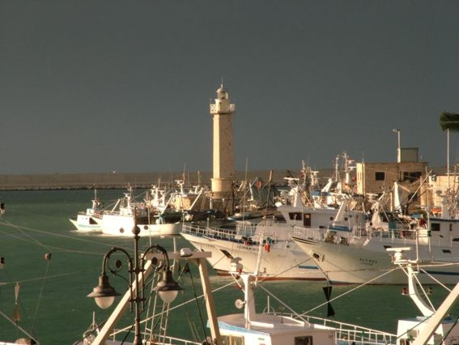

Molfetta è un comune pugliese affacciato sull'Adriatico, nella Città Metropolitana di Bari. Con il suo antico borgo marinaro, il caratteristico porto peschereccio e la maestosa Cattedrale di San Corrado, la città incarna il cuore autentico della Puglia costiera.
Il territorio di Molfetta era abitato già in epoca preistorica. Le prime tracce di insediamento risalgono all'Eneolitico, come testimoniato dai resti rinvenuti nei pressi della costa.
In epoca medievale Molfetta divenne un importante centro commerciale e porto per le rotte adriatiche. La costruzione della Cattedrale di San Corrado (XII sec.) sancì il ruolo religioso e civile della città.
Per secoli il porto ha rappresentato l'anima economica di Molfetta. La tradizione marinara e peschereccia ha plasmato la cultura locale, ancora viva nel caratteristico centro storico sul mare.
Molfetta crebbe ulteriormente nel XIX e XX secolo, sviluppando industria, commercio e diventando uno dei centri più importanti della costa barese. Oggi è una città viva che conserva orgogliosamente le proprie tradizioni.
Immagini della città di Molfetta e dei suoi luoghi più caratteristici.

Il porto storico

Duomo di Molfetta (XII sec.)

Il borgo antico sul mare

Il faro sul mare
I luoghi imperdibili di Molfetta, tra storia, fede e mare.
Cattedrale romanico-pugliese del XII sec. costruita direttamente sul mare. Tre cupole e una cripta normanna tra i tesori più rari della Puglia.
Wikipedia →Cuore pulsante della città. Barche da pesca, trabucchi e il caratteristico odore di mare. Al tramonto è uno spettacolo unico.
Wikipedia →Centro storico medievale sul promontorio. Vicoli stretti, archi, palazzi nobiliari e la vista panoramica sull'Adriatico.
Wikipedia →Dolina carsica unica nel suo genere, con resti di insediamenti preistorici risalenti all'Eneolitico. Sito di rilevanza archeologica nazionale.
Wikipedia (EN) →Santuario medievale sul lungomare, dedicato ai crociati morti durante il viaggio in Terra Santa. Meta di pellegrinaggio secolare.
Wikipedia →Il faro ottocentesco che da secoli guida i naviganti verso il porto. Simbolo della città e punto panoramico sul mare aperto.
Wikipedia →© OpenStreetMap contributors
Cucina di mare e di tradizione: i sapori autentici che raccontano Molfetta.
Il piatto simbolo di Molfetta. Zuppa di pesce fresco di scoglio cotta con pomodori freschi, olio extravergine, aglio e prezzemolo. Si serve su fette di pane casereccio abbrustolito.
Tradizione marinara purissima. Alici spinati, "merosche" (pesciolini minuscoli), "aghestenèdde" (trigliette) e polipetti teneri lavorati a mano. Si mangia direttamente sul porto.
Le orecchiette molfettesi, tirate a mano con semola di grano duro. Si servono con cime di rapa saltate in aglio e olio, oppure con ragù di maiale lento.
Pasta fatta a mano per brodo, sfoglie sottili spezzettate di semola, uova, prezzemolo e formaggio grattugiato. Si cuoce in brodo di carne e si consuma caldo nelle feste invernali.
Il dolce pasquale di Molfetta. Pasta frolla morbida farcita con marmellata di amarene e pasta di mandorle locali, ricoperta di glassa all'uovo e confettini colorati. Nella Basilica dei Martiri vengono distribuite ai fedeli.
Presidio Slow Food. Varietà autoctona coltivata solo in questa zona, dal colore scuro quasi nero e sapore leggermente affumicato. Si preparano in zuppa con pasta o semplicemente lessati con olio e rosmarino.